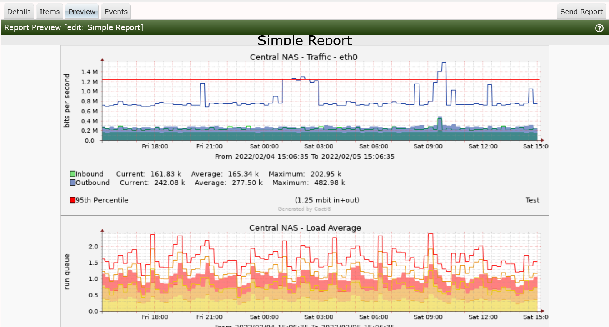

This section will describe the Report Preview Sub-Tab.
From this Sub-Tab, you will be able to preview the Report leveraging the Format File if you included one on the Details sub-tab. The rendering may actually be different depending on the Email client your recipient uses. So, it's best to send the reports to the recipients using the Send Report option in the upper right corner of the image below.

There is not too much more to speak about on this Sub-Tab.
Copyright (c) 2004-2024 The Cacti Group